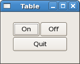

|
Gtk2Hs Tutorial |
||
|---|---|---|
|
Tables |
||
Let's take a look at another way of packing - Tables. These can be extremely useful in certain situations.
Using tables, we create a grid that we can place widgets in. The widgets may take up as many spaces as we specify.
The first thing to look at, of course, is the tableNew function:
tableNew :: Int -> Int -> Bool -> IO Table |
The first argument is the number of rows to make in the table, while the second, obviously, is the number of columns.
The boolean argument (homogeneous) has to do with how the table's boxes are sized. If homogeneous is TRUE, the table boxes are resized to the size of the largest widget in the table. If homogeneous is FALSE, the size of a table boxes is dictated by the tallest widget in its same row, and the widest widget in its column.
The rows and columns are laid out from 0 to n, where n was the number specified in the call to tableNew. So, if you specify rows = 2 and columns = 2, the layout would look something like this:
0 1 2 0+----------+----------+ | | | 1+----------+----------+ | | | 2+----------+----------+ |
Note that the coordinate system starts in the upper left hand corner. To place a widget into a box, use the following function:
tableAttach :: (TableClass self, WidgetClass child) =>
self -- self - the table
-> child -- child - The widget to add.
-> Int
-- leftAttach - the column number to attach the left side of a child widget to.
-> Int
-- rightAttach - the column number to attach the right side of a child widget to.
-> Int -- topAttach - the row number to attach the top of a child widget to.
-> Int -- bottomAttach - the row number to attach the bottom of a child widget to.
-> [AttachOptions]
-- xoptions - Used to specify the properties of the child widget when the table is resized.
-> [AttachOptions]
-- yoptions - The same as xoptions, except this field determines behaviour of vertical resizing.
-> Int
-- xpadding - An integer value specifying the padding on the left and right of the widget being added to the table.
-> Int -- ypadding - The amount of padding above and below the child widget.
-> IO ()
|
The first argument (self) is the table you've created and the second (child) the widget you wish to place in the table.
The left and right attach arguments specify where to place the widget, and how many boxes to use. If you want a button in the lower right table entry of our 2x2 table, and want it to fill that entry only, left_attach would be = 1, right_attach = 2, top_attach = 1, bottom_attach = 2.
Now, if you wanted a widget to take up the whole top row of our 2x2 table, you'd use left_attach = 0, right_attach = 2, top_attach = 0, bottom_attach = 1.
The xoptions and yoptions are used to specify packing options and the list may contain more than one to allow multiple options.
These options are:
Padding is just like in boxes, creating a clear area around the widget specified in pixels.
tableAttach has many options. So, there's a shortcut:
tableAttachDefaults :: (TableClass self, WidgetClass widget) => self -> widget -- widget - The child widget to add. -> Int -- leftAttach - The column number to attach the left side of the child widget to. -> Int -- rightAttach - The column number to attach the right side of the child widget to. -> Int -- topAttach - The row number to attach the top of the child widget to. -> Int -- bottomAttach - The row number to attach the bottom of the child widget to. -> IO () |
The values used for the AttachOptions are [Expand, Fill], and the padding is set to 0. The rest of the arguments are identical to the previous function.
We also have tableSetRowSpacing and tableSetColSpacing. These place spacing at the specified row or column.
tableSetRowSpacing :: TableClass self=> self-> Int -> Int -> IO () |
and,
tableSetColSpacing :: TableClass self => self -> Int -> Int -> IO () |
The first Int argument is the row/column and the second the spacing in pixels. Note that for columns, the space goes to the right of the column, and for rows, the space goes below the row.
You can also set a consistent spacing of all rows and/or columns with:
tableSetRowSpacings :: TableClass self=> self-> Int -> IO () |
and,
tableSetColSpacings :: TableClass self => self -> Int -> IO () |
Note that with these calls, the last row and last column do not get any spacing.
Here we make a window with three buttons in a 2x2 table. The first two buttons will be placed in the upper row. A third, quit button, is placed in the lower row, spanning both columns. Which means it should look something like this:

Here's the source code:
import Graphics.UI.Gtk
main :: IO ()
main = do
initGUI
window <- windowNew
set window [windowTitle := "Table", containerBorderWidth := 20,
windowDefaultWidth := 150, windowDefaultHeight := 100 ]
table <- tableNew 2 2 True
containerAdd window table
button1 <- buttonNewWithLabel "On"
onClicked button1 (buttonSwitch button1)
tableAttachDefaults table button1 0 1 0 1
button2 <- buttonNewWithLabel "Off"
onClicked button2 (buttonSwitch button2)
tableAttachDefaults table button2 1 2 0 1
button3 <- buttonNewWithLabel "Quit"
onClicked button3 mainQuit
tableAttachDefaults table button3 0 2 1 2
onDestroy window mainQuit
widgetShowAll window
mainGUI
buttonSwitch :: Button -> IO ()
buttonSwitch b = do
txt <- buttonGetLabel b
let newtxt = case txt of
"Off" -> "On"
"On" -> "Off"
buttonSetLabel b newtxt
|
The buttonSwitch function is attached to both buttons in the top row. The buttonGetLabel function is an example of how to get an attribute from a widget using a standard method. There is also a more general alternative get (analogous to set) which takes a widget and an attribute. In the above example this should be:
|
txt <- get b buttonLabel |
with the same result.
|
Packing Demonstration |
Button Widget |